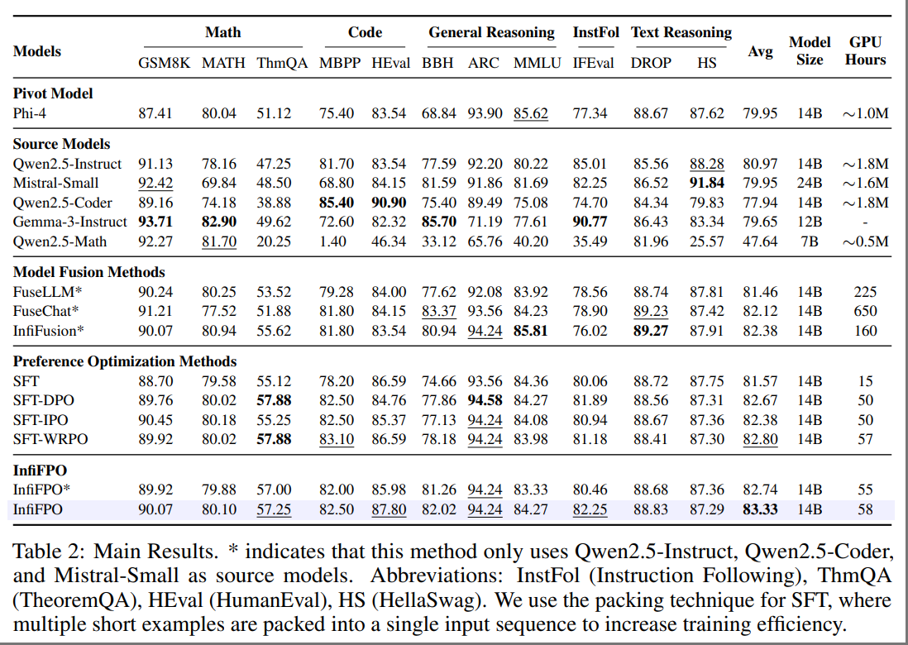

InfiFPO: Implicit Model Fusion via Preference Optimization in Large Language Models
We propose InfiFPO, a principled and efficient framework for performing model fusion during the preference alignment phase. Our key insight is that the reference model in preference optimization (e.g., in DPO) can be replaced with a fused source model, thereby enabling the pivot model to learn not only from preference data but also from the probabilistic behaviors of multiple source models.

Comprehensive experiments on 11 widely-used benchmarks demonstrate that InfiFPO consistently outperforms existing model fusion and preference optimization methods. When using Phi-4 as the pivot model, InfiFPO improve its average performance from 79.95 to 83.33 on 11 benchmarks, significantly improving its capabilities in mathematics, coding, and reasoning tasks.
🕹️ Usage
Installation
git clone https://github.com/Reallm-Labs/InfiFPO.git
cd InfiFPO
conda create -n infifpo python==3.10
conda activate infifpo
pip install -r requirements.txt
Training
Our training code is primarily based on the dpo_trainer from the TRL library by Hugging Face. Specifically, we reference the implementation in dpo_trainer.py.
- Check the
run.shfile - If you’re using a SLURM cluster, check the
run-slurm.shfile instead
Supported Dataset Format
InfiFPO now supports datasets with the following structure and fields:
chosen: The preferred responserejected: The non-preferred response
Pre-calculated Log Probabilities
Pivot Model Metrics
ref_chosen_logps: Log probabilities of thechosenresponse calculated by the pivot modelref_rejected_logps: Log probabilities of therejectedresponse calculated by the pivot modelref_mean_chosen_logps: Mean log probabilities of thechosenresponse calculated by the pivot modelref_mean_rejected_logps: Mean log probabilities of therejectedresponse calculated by the pivot model
Source Model Metrics
fuse_chosen_logps: Log probabilities of thechosenresponse calculated by the source modelfuse_rejected_logps: Log probabilities of therejectedresponse calculated by the source modelfuse_mean_chosen_logps: Mean log probabilities of thechosenresponse calculated by the source modelfuse_mean_rejected_logps: Mean log probabilities of therejectedresponse calculated by the source model
Example
{
"chosen": [
{
"role": "user",
"content": "A batch of barley seeds had the following germination test results under the same conditions:\n\n| Number of Seeds | $50$ | $100$ | $300$ | $400$ | $600$ | $1000$ |\n|-----------------|------|-------|-------|-------|-------|--------|\n| Germination Frequency | $47$ | $96$ | $284$ | $380$ | $571$ | $948$ |\n\nEstimate the probability of germination for this batch of barley seeds. (Round the result to $0.01$)"
},
{
"role": "assistant",
"content": "To estimate the probability of germination for the batch of barley seeds, we need to calculate the overall germination rate across all the samples. This involves finding the total number of seeds that germinated and dividing it by the total number of seeds tested.\n\nFirst, we calculate the total number of seeds:\n\n\\[\n50 + 100 + 300 + 400 + 600 + 1000 = 2450\n\\]\n\nNext, we calculate the total number of seeds that germinated:\n\n\\[\n47 + 96 + 284 + 380 + 571 + 948 = 2326\n\\]\n\nNow, we find the probability of germination by dividing the total number of germinated seeds by the total number of seeds:\n\n\\[\n\\text{Probability of germination} = \\frac{2326}{2450}\n\\]\n\nPerform the division:\n\n\\[\n\\frac{2326}{2450} \\approx 0.9493877551\n\\]\n\nRounding this to two decimal places gives:\n\n\\[\n0.95\n\\]\n\nThus, the estimated probability of germination for this batch of barley seeds is \\(\\boxed{0.95}\\)."
}
],
"rejected": [
{
"role": "user",
"content": "A batch of barley seeds had the following germination test results under the same conditions:\n\n| Number of Seeds | $50$ | $100$ | $300$ | $400$ | $600$ | $1000$ |\n|-----------------|------|-------|-------|-------|-------|--------|\n| Germination Frequency | $47$ | $96$ | $284$ | $380$ | $571$ | $948$ |\n\nEstimate the probability of germination for this batch of barley seeds. (Round the result to $0.01$)"
},
{
"role": "assistant",
"content": "To estimate the probability of germination for the batch of barley seeds, we need to calculate the overall germination rate based on the given data. The germination rate is the ratio of the total number of seeds that germinated to the total number of seeds tested.\n\nFirst, let's calculate the total number of seeds tested:\n\n\\[\n50 + 100 + 300 + 400 + 600 + 1000 = 2450\n\\]\n\nNext, let's calculate the total number of seeds that germinated:\n\n\\[\n47 + 96 + 284 + 380 + 571 + 948 = 2326\n\\]\n\nNow, we can calculate the probability of germination by dividing the total number of seeds that germinated by the total number of seeds tested:\n\n\\[\n\\text{Probability of germination} = \\frac{2326}{2450}\n\\]\n\nPerform the division:\n\n\\[\n\\frac{2326}{2450} \\approx 0.9481632653\n\\]\n\nRounding this result to two decimal places gives:\n\n\\[\n0.95\n\\]\n\nTherefore, the estimated probability of germination for this batch of barley seeds is \\( \\boxed{0.95} \\)."
}
],
"ref_chosen_logps": -16.809629440307617,
"ref_mean_chosen_logps": -0.06974949687719345,
"ref_rejected_logps": -35.141197204589844,
"ref_mean_rejected_logps": -0.13944919407367706,
"fuse_chosen_logps": [
-67.31946563720703,
-74.1878662109375,
-104.12448120117188
],
"fuse_mean_chosen_logps": [
-0.2378779649734497,
-0.2621479332447052,
-0.3679310381412506
],
"fuse_rejected_logps": [
-75.14492797851562,
-78.72958374023438,
-99.033447265625
],
"fuse_mean_rejected_logps": [
-0.25559499859809875,
-0.2677876949310303,
-0.3368484675884247
]